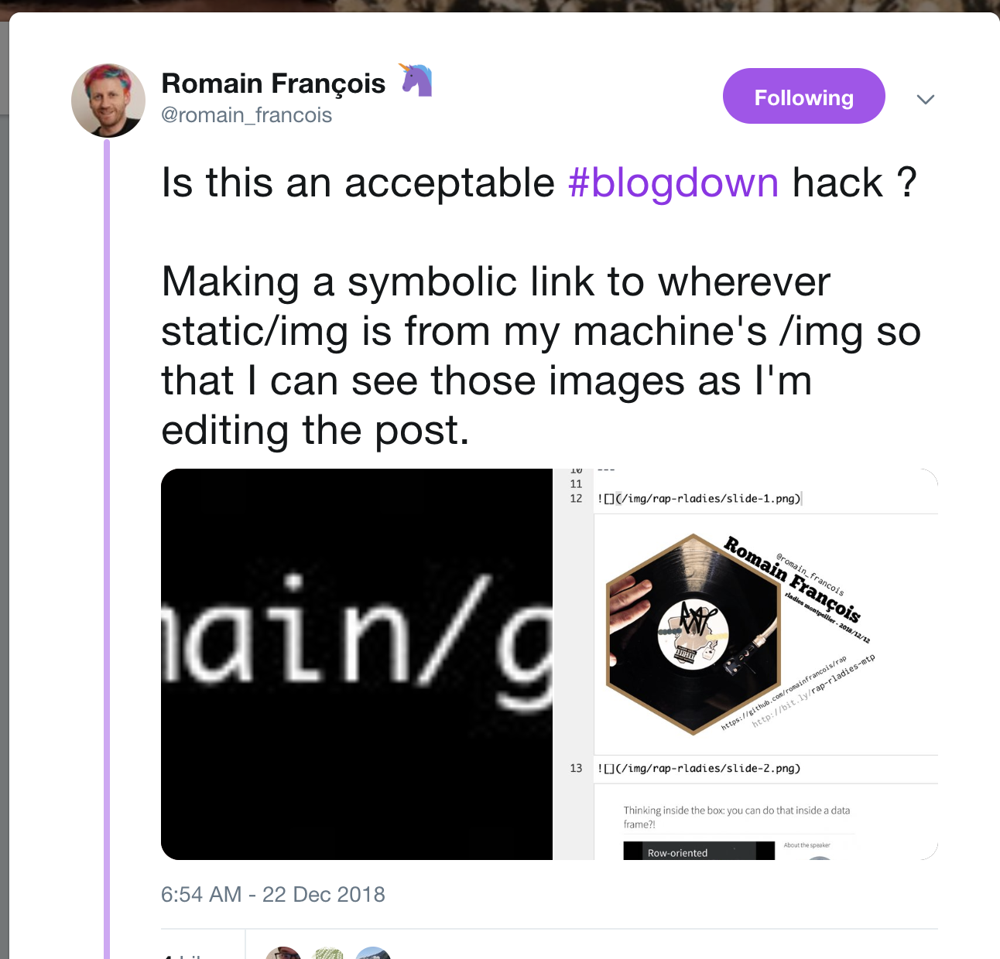

<div id="r-markdown" class="section level1">
<h1>R Markdown</h1>
<div class="figure">


</div>
<pre class="r"><code># more stuff
knitr::include_graphics(&quot;./meta-image.png&quot;)</code></pre>
<p></p>
<p>Using the ideas laid out in <a href="https://gohugo.io/content-management/page-bundles/">page bundles</a>.</p>
</div>
